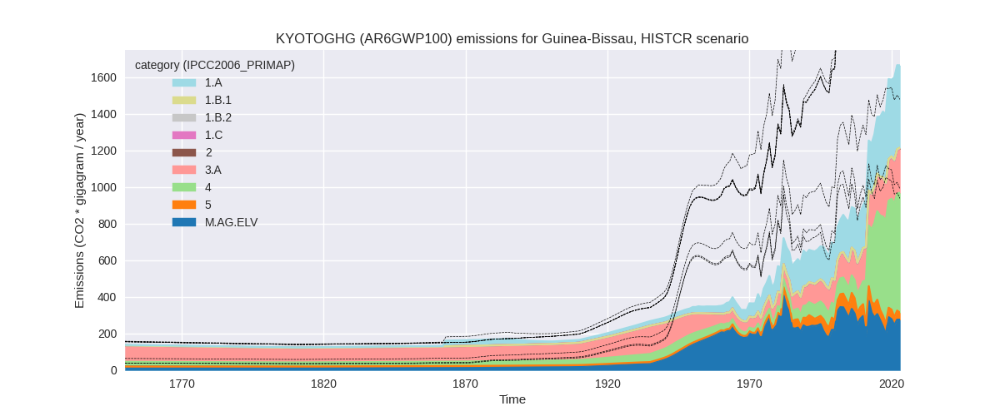
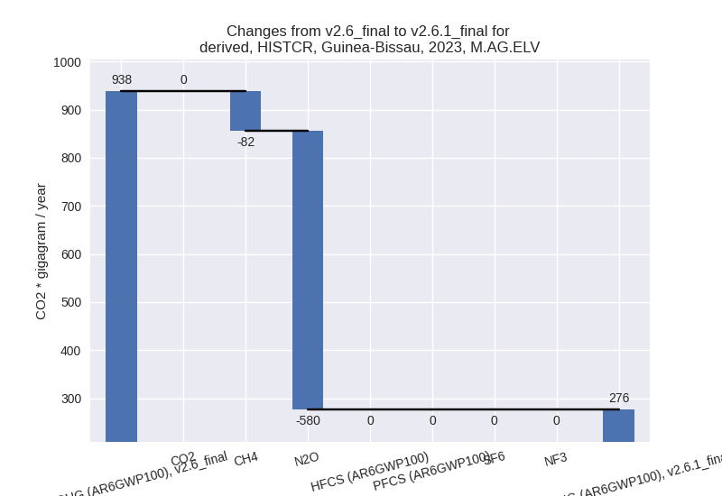

Changes in PRIMAP-hist v2.6.1_final compared to v2.6_final for Guinea-Bissau
2025-03-19
Johannes Gütschow
Change analysis for Guinea-Bissau for PRIMAP-hist v2.6.1_final compared to v2.6_final
Overview over emissions by sector and gas
The following figures show the aggregate national total emissions excluding LULUCF AR6GWP100 for the country reported priority scenario. The dotted linesshow the v2.6_final data.

The following figures show the aggregate national total emissions excluding LULUCF AR6GWP100 for the third party priority scenario. The dotted linesshow the v2.6_final data.

Overview over changes
In the country reported priority scenario we have the following changes for aggregate Kyoto GHG and national total emissions excluding LULUCF (M.0.EL):
- Emissions in 2023 have changed by -51.4%% (-1761.27 Gg CO2 / year)
- Emissions in 1990-2023 have changed by -62.5%% (-1669.72 Gg CO2 / year)
In the third party priority scenario we have the following changes for aggregate Kyoto GHG and national total emissions excluding LULUCF (M.0.EL):
- Emissions in 2023 have changed by -5.1%% (-175.72 Gg CO2 / year)
- Emissions in 1990-2023 have changed by -2.4%% (-65.24 Gg CO2 / year)
Most important changes per scenario and time frame
In the country reported priority scenario the following sector-gas combinations have the highest absolute impact on national total KyotoGHG (AR6GWP100) emissions in 2023 (top 5):
- 1: 3.A, CH4 with -697.07 Gg CO2 / year (-74.4%)
- 2: M.AG.ELV, N2O with -579.77 Gg CO2 / year (-95.6%)
- 3: 1.A, CH4 with -293.92 Gg CO2 / year (-69.2%)
- 4: 4, CH4 with 149.51 Gg CO2 / year (31.6%)
- 5: 1.B.1, CH4 with -90.33 Gg CO2 / year (-100.0%)
In the country reported priority scenario the following sector-gas combinations have the highest absolute impact on national total KyotoGHG (AR6GWP100) emissions in 1990-2023 (top 5):
- 1: 3.A, CH4 with -549.43 Gg CO2 / year (-77.3%)
- 2: M.AG.ELV, N2O with -510.19 Gg CO2 / year (-94.1%)
- 3: 1.A, CH4 with -201.49 Gg CO2 / year (-65.0%)
- 4: M.AG.ELV, CH4 with -102.84 Gg CO2 / year (-30.4%)
- 5: 1.A, CO2 with -100.28 Gg CO2 / year (-42.6%)
In the third party priority scenario the following sector-gas combinations have the highest absolute impact on national total KyotoGHG (AR6GWP100) emissions in 2023 (top 5):
- 1: 1.A, CH4 with -177.76 Gg CO2 / year (-41.9%)
- 2: 4, CH4 with -154.33 Gg CO2 / year (-32.6%)
- 3: 1.B.1, CH4 with 98.83 Gg CO2 / year (109.4%)
- 4: M.AG.ELV, CH4 with 54.10 Gg CO2 / year (16.3%)
- 5: M.AG.ELV, N2O with 38.82 Gg CO2 / year (6.4%)
In the third party priority scenario the following sector-gas combinations have the highest absolute impact on national total KyotoGHG (AR6GWP100) emissions in 1990-2023 (top 5):
- 1: 4, CH4 with -100.81 Gg CO2 / year (-33.2%)
- 2: 1.B.1, CH4 with 83.22 Gg CO2 / year (131.8%)
- 3: 1.A, CH4 with -48.38 Gg CO2 / year (-15.6%)
- 4: 1.A, N2O with -5.95 Gg CO2 / year (-13.9%)
- 5: 4, CO2 with 2.73 Gg CO2 / year (inf%)
Notes on data changes
Here we list notes explaining important emissions changes for the country.
- CRT data from BTR1 covering 2010-2022 has been included. It is the first country reported data source with sufficient coverage. Emissions are much lower than in the TP scenario with high contributions from the agricultural sector and CH4 in 1.A.
- Lower emissions in the TP scenario come from lower CH4 emission in EDGAR data for 1.A and 4. CH4 in 1.B.1 is higher in new EDGAR data and for 2023 the new FAO data impacts agricultural emissions.
Changes by sector and gas
For each scenario and time frame the changes are displayed for all individual sectors and all individual gases. In the sector plot we use aggregate Kyoto GHGs in AR6GWP100. In the gas plot we usenational total emissions without LULUCF.
country reported scenario
2023
1990-2023
third party scenario
2023
1990-2023
Detailed changes for the scenarios:
country reported scenario (HISTCR):
Most important changes per time frame
For 2023 the following sector-gas combinations have the highest absolute impact on national total KyotoGHG (AR6GWP100) emissions in 2023 (top 5):
- 1: 3.A, CH4 with -697.07 Gg CO2 / year (-74.4%)
- 2: M.AG.ELV, N2O with -579.77 Gg CO2 / year (-95.6%)
- 3: 1.A, CH4 with -293.92 Gg CO2 / year (-69.2%)
- 4: 4, CH4 with 149.51 Gg CO2 / year (31.6%)
- 5: 1.B.1, CH4 with -90.33 Gg CO2 / year (-100.0%)
For 1990-2023 the following sector-gas combinations have the highest absolute impact on national total KyotoGHG (AR6GWP100) emissions in 1990-2023 (top 5):
- 1: 3.A, CH4 with -549.43 Gg CO2 / year (-77.3%)
- 2: M.AG.ELV, N2O with -510.19 Gg CO2 / year (-94.1%)
- 3: 1.A, CH4 with -201.49 Gg CO2 / year (-65.0%)
- 4: M.AG.ELV, CH4 with -102.84 Gg CO2 / year (-30.4%)
- 5: 1.A, CO2 with -100.28 Gg CO2 / year (-42.6%)
Changes in the main sectors for aggregate KyotoGHG (AR6GWP100) are
- 1: Total sectoral emissions in 2022 are 460.76 Gg
CO2 / year which is 27.6% of M.0.EL emissions. 2023 Emissions have
changed by -52.1% (-491.34 Gg CO2 /
year). 1990-2023 Emissions have changed by -60.1% (-391.71 Gg CO2 / year). For 2023
the changes per gas
are:
For 1990-2023 the changes per gas are:
The changes come from the following subsectors:- 1.A: Total sectoral emissions in 2022 are 458.26 Gg
CO2 / year which is 99.5% of category 1 emissions. 2023 Emissions have
changed by -47.3% (-402.32 Gg CO2 /
year). 1990-2023 Emissions have changed by -56.1% (-329.67 Gg CO2 / year). For 2023
the changes per gas
are:
For 1990-2023 the changes per gas are:
There is no subsector information available in PRIMAP-hist. - 1.B.1: Total sectoral emissions in 2022 are 2.51 Gg
CO2 / year which is 0.5% of category 1 emissions. 2023 Emissions have
changed by -97.3% (-89.02 Gg CO2 /
year). 1990-2023 Emissions have changed by -97.0% (-62.04 Gg CO2 / year). For 2023
the changes per gas
are:
For 1990-2023 the changes per gas are:
There is no subsector information available in PRIMAP-hist. - 1.B.2: Total sectoral emissions in 2022 are 0.00 Gg
CO2 / year which is 0.0% of category 1 emissions. 2023 Emissions have
changed by -100.0% (-0.00 Gg CO2 /
year). 1990-2023 Emissions have changed by -100.0% (-0.00 Gg CO2 / year). For 2023
the changes per gas
are:
For 1990-2023 the changes per gas are:
There is no subsector information available in PRIMAP-hist.
- 1.A: Total sectoral emissions in 2022 are 458.26 Gg
CO2 / year which is 99.5% of category 1 emissions. 2023 Emissions have
changed by -47.3% (-402.32 Gg CO2 /
year). 1990-2023 Emissions have changed by -56.1% (-329.67 Gg CO2 / year). For 2023
the changes per gas
are:
- 2: Total sectoral emissions in 2022 are 4.18 Gg CO2
/ year which is 0.3% of M.0.EL emissions. 2023 Emissions have changed by
-24.7% (-1.40 Gg CO2 / year).
1990-2023 Emissions have changed by -4.3% (-0.17 Gg CO2 / year). For 2023 the
changes per gas
are:
For 1990-2023 the changes per gas are: - M.AG: Total sectoral emissions in 2022 are 513.86
Gg CO2 / year which is 30.8% of M.0.EL emissions. 2023 Emissions have
changed by -73.4% (-1421.19 Gg CO2 /
year). 1990-2023 Emissions have changed by -73.8% (-1210.54 Gg CO2 / year). For 2023
the changes per gas
are:

For 1990-2023 the changes per gas are:
The changes come from the following subsectors:- 3.A: Total sectoral emissions in 2022 are 237.81 Gg
CO2 / year which is 46.3% of category M.AG emissions. 2023 Emissions
have changed by -76.0% (-759.36 Gg
CO2 / year). 1990-2023 Emissions have changed by -78.7% (-597.63 Gg CO2 / year). For 2023
the changes per gas
are:
For 1990-2023 the changes per gas are:
There is no subsector information available in PRIMAP-hist. - M.AG.ELV: Total sectoral emissions in 2022 are
276.05 Gg CO2 / year which is 53.7% of category M.AG emissions. 2023
Emissions have changed by -70.5%
(-661.83 Gg CO2 / year). 1990-2023 Emissions have changed by -69.6% (-612.92 Gg CO2 / year). For 2023
the changes per gas
are:

For 1990-2023 the changes per gas are:
There is no subsector information available in PRIMAP-hist.
- 3.A: Total sectoral emissions in 2022 are 237.81 Gg
CO2 / year which is 46.3% of category M.AG emissions. 2023 Emissions
have changed by -76.0% (-759.36 Gg
CO2 / year). 1990-2023 Emissions have changed by -78.7% (-597.63 Gg CO2 / year). For 2023
the changes per gas
are:
- 4: Total sectoral emissions in 2022 are 637.84 Gg
CO2 / year which is 38.3% of M.0.EL emissions. 2023 Emissions have
changed by 34.0% (166.35 Gg CO2 /
year). 1990-2023 Emissions have changed by -21.0% (-66.15 Gg CO2 / year). For 2023
the changes per gas
are:
For 1990-2023 the changes per gas are: - 5: Total sectoral emissions in 2022 are 49.81 Gg
CO2 / year which is 3.0% of M.0.EL emissions. 2023 Emissions have
changed by -26.5% (-13.70 Gg CO2 /
year). 1990-2023 Emissions have changed by -1.9% (-1.15 Gg CO2 / year). For 2023 the
changes per gas
are:
third party scenario (HISTTP):
Most important changes per time frame
For 2023 the following sector-gas combinations have the highest absolute impact on national total KyotoGHG (AR6GWP100) emissions in 2023 (top 5):
- 1: 1.A, CH4 with -177.76 Gg CO2 / year (-41.9%)
- 2: 4, CH4 with -154.33 Gg CO2 / year (-32.6%)
- 3: 1.B.1, CH4 with 98.83 Gg CO2 / year (109.4%)
- 4: M.AG.ELV, CH4 with 54.10 Gg CO2 / year (16.3%)
- 5: M.AG.ELV, N2O with 38.82 Gg CO2 / year (6.4%)
For 1990-2023 the following sector-gas combinations have the highest absolute impact on national total KyotoGHG (AR6GWP100) emissions in 1990-2023 (top 5):
- 1: 4, CH4 with -100.81 Gg CO2 / year (-33.2%)
- 2: 1.B.1, CH4 with 83.22 Gg CO2 / year (131.8%)
- 3: 1.A, CH4 with -48.38 Gg CO2 / year (-15.6%)
- 4: 1.A, N2O with -5.95 Gg CO2 / year (-13.9%)
- 5: 4, CO2 with 2.73 Gg CO2 / year (inf%)
Changes in the main sectors for aggregate KyotoGHG (AR6GWP100) are
- 1: Total sectoral emissions in 2022 are 854.63 Gg
CO2 / year which is 26.3% of M.0.EL emissions. 2023 Emissions have
changed by -10.6% (-99.69 Gg CO2 /
year). 1990-2023 Emissions have changed by 4.6% (29.99 Gg CO2 / year). For 2023 the
changes per gas
are:
For 1990-2023 the changes per gas are:
The changes come from the following subsectors:- 1.A: Total sectoral emissions in 2022 are 662.97 Gg
CO2 / year which is 77.6% of category 1 emissions. 2023 Emissions have
changed by -23.5% (-199.83 Gg CO2 /
year). 1990-2023 Emissions have changed by -9.2% (-54.33 Gg CO2 / year). For 2023 the
changes per gas
are:
For 1990-2023 the changes per gas are:
There is no subsector information available in PRIMAP-hist. - 1.B.1: Total sectoral emissions in 2022 are 191.66
Gg CO2 / year which is 22.4% of category 1 emissions. 2023 Emissions
have changed by 109.4% (100.14 Gg
CO2 / year). 1990-2023 Emissions have changed by 131.8% (84.32 Gg CO2 / year). For 2023 the
changes per gas
are:
For 1990-2023 the changes per gas are:
There is no subsector information available in PRIMAP-hist. - 1.B.2: Total sectoral emissions in 2022 are 0.00 Gg
CO2 / year which is 0.0% of category 1 emissions. 2023 Emissions have
changed by -21.4% (-0.00 Gg CO2 /
year). 1990-2023 Emissions have changed by -23.5% (-0.00 Gg CO2 / year). For 2023 the
changes per gas
are:
For 1990-2023 the changes per gas are:
There is no subsector information available in PRIMAP-hist.
- 1.A: Total sectoral emissions in 2022 are 662.97 Gg
CO2 / year which is 77.6% of category 1 emissions. 2023 Emissions have
changed by -23.5% (-199.83 Gg CO2 /
year). 1990-2023 Emissions have changed by -9.2% (-54.33 Gg CO2 / year). For 2023 the
changes per gas
are:
- 2: Total sectoral emissions in 2022 are 4.18 Gg CO2
/ year which is 0.1% of M.0.EL emissions. 2023 Emissions have changed by
-24.7% (-1.40 Gg CO2 / year).
1990-2023 Emissions have changed by -4.3% (-0.17 Gg CO2 / year). For 2023 the
changes per gas
are:
For 1990-2023 the changes per gas are: - M.AG: Total sectoral emissions in 2022 are 2009.26
Gg CO2 / year which is 61.8% of M.0.EL emissions. 2023 Emissions have
changed by 4.4% (85.92 Gg CO2 /
year). 1990-2023 Emissions have changed by 0.3% (4.17 Gg CO2 / year). For 2023 the
changes per gas
are:
The changes come from the following subsectors:- 3.A: Total sectoral emissions in 2022 are 984.09 Gg CO2 / year which is 49.0% of category M.AG emissions. 2023 Emissions have changed by -0.7% (-7.04 Gg CO2 / year). 1990-2023 Emissions have changed by 0.1% (0.55 Gg CO2 / year).
- M.AG.ELV: Total sectoral emissions in 2022 are
1025.18 Gg CO2 / year which is 51.0% of category M.AG emissions. 2023
Emissions have changed by 9.9%
(92.95 Gg CO2 / year). 1990-2023 Emissions have changed by 0.4% (3.61 Gg CO2 / year). For 2023 the
changes per gas
are:
There is no subsector information available in PRIMAP-hist.
- 4: Total sectoral emissions in 2022 are 333.08 Gg
CO2 / year which is 10.2% of M.0.EL emissions. 2023 Emissions have
changed by -30.0% (-146.85 Gg CO2 /
year). 1990-2023 Emissions have changed by -31.2% (-98.08 Gg CO2 / year). For 2023
the changes per gas
are:
For 1990-2023 the changes per gas are: - 5: Total sectoral emissions in 2022 are 49.81 Gg
CO2 / year which is 1.5% of M.0.EL emissions. 2023 Emissions have
changed by -26.5% (-13.70 Gg CO2 /
year). 1990-2023 Emissions have changed by -1.9% (-1.15 Gg CO2 / year). For 2023 the
changes per gas
are: